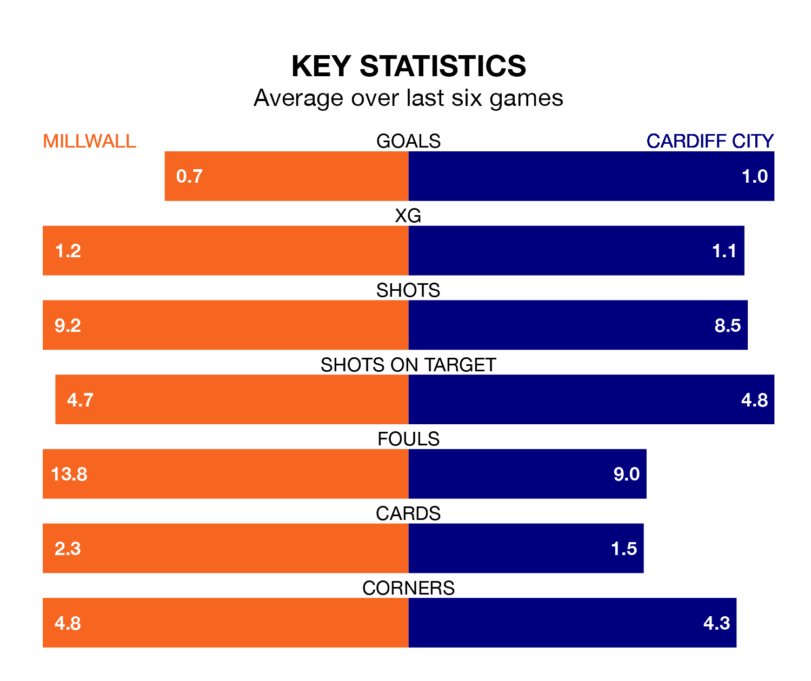

Millwall host Cardiff City on Saturday at the Den in EFL Championship.
In their last league match, on Tuesday, Millwall beat Leicester City 1-0 at home, with their goal scored by Ryan Longman.
Cardiff also won, 1-0 away at Birmingham City on Wednesday, with Josh Bowler scoring their goals.
In the last 10 years, Millwall and Cardiff have played each other on 13 occasions. Millwall won four of them, Cardiff two, and they drew seven times.
On average, the Lions scored 1.0 goal and the Bluebirds 0.8 in those matches.
Their last meeting was on December 9, when Cardiff won 1-0 at home.
Millwall are 17th in the table after 42 games, of which they have won 12 and drawn 11, earning 47 points.
Cardiff are six places ahead of the Lions in 11th, with 18 wins and five draws putting them on 59 points.
With 39 goals in 42 games so far this season, the hosts are the league's third-lowest scorers with 0.9 goals per game. And they are conceding at an average rate, letting in 54 goals at a rate of 1.3 per game.
City are also below average scorers, with 1.1 goals per game, compared to a league average of 1.3. They have conceded 1.4 goals per game.
Millwall are in mixed form in EFL Championship, with two wins and a draw from their last six games.
With three wins and three losses over that period, the Bluebirds' form is slightly better – they have taken nine points from 18, compared to Millwall's seven.
Saturday's match will be refereed by Will Finnie, who is taking charge of his first EFL Championship game this season.
He is yet to oversee a match featuring either Millwall or Cardiff this season.
Updated: 10:01 (UTC), 12/04/24